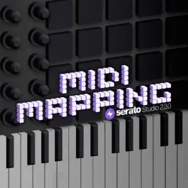
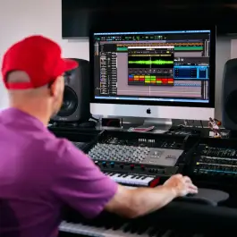

-

Download studion 2.3.0
Now With MIDI Mapping Support
-

Download Sample 2.0
Stem Separation Now in Sample
-
Download DJ Pro 3.2.1
A New Era of Hardware Support
DJ SOFTWARE


Unrivaled DJ Software
Download v3.2.1
Start DJing for Free
Discover DJ LiteIndustry-Leading Hardware
Explore hardware“Serato DJ Pro is amazing. Stems allows you to have so much more creativity in your DJ sets, and to finesse blends in different ways.”
Natasha Diggs
DJ & PRODUCER
Production Software

The Future of Sampling
Download v2.0
The Ultimate Beat Maker
Download v2.3.0“Every time I sit down with Sample, it’s so fast. Stems opens up ideas that weren’t possible before.”
Jake One
Grammy-winning producer